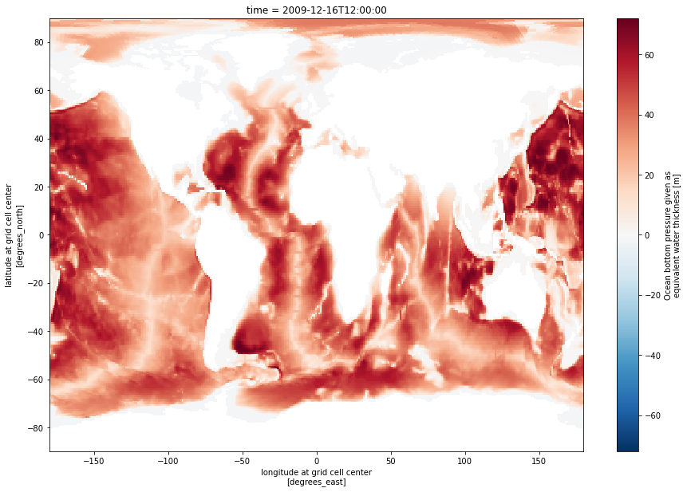
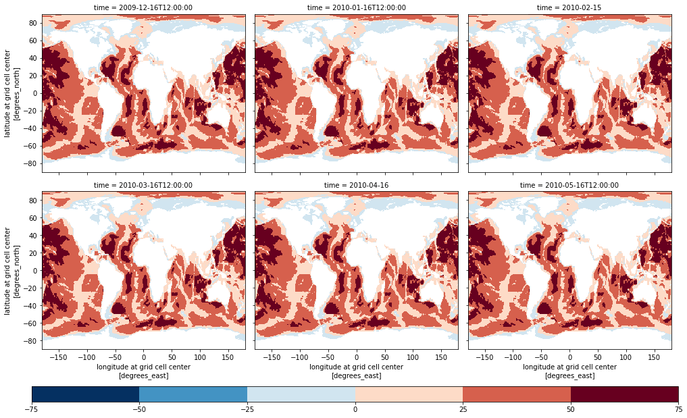

import matplotlib.pyplot as plt
import xarray as xr
import pandas as pd
import numpy as np
import requests
import json
import time
import s3fs
ShortName = "ECCO_L4_OBP_05DEG_MONTHLY_V4R4"COF Zarr Access via Reformat
imported on: 2023-07-05
This notebook is from a different repository in NASA’s PO.DAAC, ECCO.
The original source for this document is https://github.com/podaac/ECCO/blob/main/Data_Access/cloud_harmony_zarr_reformat.ipynb
Access ECCO data via Harmony & the Zarr reformatter service
This notebook leverages the Zarr reformatter service (available through Harmony API) to access ocean bottom pressure (OBP) data from ECCO V4r4 in Zarr format (instead of native netCDF4 file format).
Getting Started
We will access monthly ocean bottom pressure (OBP) data from ECCO V4r4 (10.5067/ECG5M-OBP44), which are provided as a monthly time series on a 0.5-degree latitude/longitude grid.
The data are archived in netCDF format. However, this notebook demonstration will request conversion to Zarr format for files covering the period between 2010 and 2018. Upon receiving our request, Harmony’s backend will convert the files and stage them in S3 for native access in AWS (us-west-2 region, specifically). We will access the new Zarr datasets as an aggregated dataset using xarray, and leverage the S3 native protocols for direct access to the data in an efficient manner.

Requirements
AWS
This notebook should be running in an EC2 instance in AWS region us-west-2, as previously mentioned. We recommend using an EC2 with at least 8GB of memory available.
The notebook was developed and tested using a t2.large instance (2 cpus; 8GB memory).
Python 3
Most of these imports are from the Python standard library. However, you will need to install these packages into your Python 3 environment if you have not already done so:
- s3fs
- requests
- pandas
- xarray
- matplotlib
Requirements
Study period
Set some “master” inputs to define the time and place contexts for our case studies in the ipynb. This example will be requesting time subsets and receiving global data back from the Harmony API.
start_date = "2010-01-01"
end_date = "2018-12-31"Data Access
Some features in the Harmony API require us to identify the target dataset/collection by its concept-id (which uniquely idenfifies it among the other datasets in the Common Metadata Repository). Support for selection by the dataset ShortName will be added in a future release.
Common Metadata Repository (CMR)
For now, we will need to get the concept-id that corresponds to our dataset by accessing its metadata from the CMR. Read more about the CMR at: https://cmr.earthdata.nasa.gov/
Request the UMM Collection metadata (i.e. metadata about the dataset) from the CMR and select the concept-id as a new variable ccid.
response = requests.get(
url='https://cmr.earthdata.nasa.gov/search/collections.umm_json',
params={'provider': "POCLOUD",
'ShortName': ShortName,
'page_size': 1}
)
ummc = response.json()['items'][0]
ccid = ummc['meta']['concept-id']
ccid'C1990404791-POCLOUD'Harmony API
And get the Harmony API endpoint and zarr parameter like we did for SMAP before:
base = f"https://harmony.earthdata.nasa.gov/{ccid}"
hreq = f"{base}/ogc-api-coverages/1.0.0/collections/all/coverage/rangeset"
rurl = f"{hreq}?format=application/x-zarr"
print(rurl)https://harmony.earthdata.nasa.gov/C1990404791-POCLOUD/ogc-api-coverages/1.0.0/collections/all/coverage/rangeset?format=application/x-zarrECCO monthly collections have 312 granules in V4r4 (you can confirm with the granule listing from CMR Search API) so we can get the entire time series for 2010 to 2018 with one request to the Harmony API.
Format a string of query parameters to limit the processing to the desired time period. Then, append the string of time subset parameters to the variable rurl.
subs = '&'.join([f'subset=time("{start_date}T00:00:00.000Z":"{end_date}T23:59:59.999Z")'])
rurl = f"{rurl}&{subs}"
print(rurl)https://harmony.earthdata.nasa.gov/C1990404791-POCLOUD/ogc-api-coverages/1.0.0/collections/all/coverage/rangeset?format=application/x-zarr&subset=time("2010-01-01T00:00:00.000Z":"2018-12-31T23:59:59.999Z")Submit the request and monitor the processing status in a while loop, breaking it on completion of the request job:
response = requests.get(url=rurl).json()
# Monitor status in a while loop. Wait 10 seconds for each check.
wait = 10
while True:
response = requests.get(url=response['links'][0]['href']).json()
if response['status']!='running':
break
print(f"Job in progress ({response['progress']}%)")
time.sleep(wait)
print("DONE!")Job in progress (0%)
Job in progress (0%)
Job in progress (0%)
Job in progress (0%)
Job in progress (0%)
Job in progress (0%)
Job in progress (0%)
Job in progress (0%)
Job in progress (0%)
Job in progress (0%)
Job in progress (0%)
Job in progress (0%)
Job in progress (0%)
Job in progress (0%)
Job in progress (0%)
Job in progress (0%)
Job in progress (0%)
Job in progress (0%)
Job in progress (0%)
Job in progress (0%)
Job in progress (0%)
Job in progress (0%)
Job in progress (0%)
Job in progress (0%)
Job in progress (0%)
Job in progress (0%)
Job in progress (0%)
Job in progress (0%)
Job in progress (0%)
Job in progress (0%)
Job in progress (0%)
Job in progress (0%)
Job in progress (0%)
Job in progress (0%)
Job in progress (0%)
Job in progress (0%)
Job in progress (0%)
Job in progress (0%)
Job in progress (0%)
Job in progress (0%)
DONE!Access the staged cloud datasets over native AWS interfaces
Check the message field in the response for clues about how to proceed:
print(response['message'])The job has completed successfully. Contains results in AWS S3. Access from AWS us-west-2 with keys from https://harmony.earthdata.nasa.gov/cloud-access.shThe third item in the list of links contains the shell script from the job status message printed above. Let’s download the same information in JSON format. It should be the fourth item; check to be sure:
len(response['links'])102Select the url and download the json, then load to Python dictionary and print the keys:
with requests.get(response['links'][3]['href']) as r:
creds = r.json()
print(creds.keys())dict_keys(['AccessKeyId', 'SecretAccessKey', 'SessionToken', 'Expiration'])Check the expiration timestamp for the temporary credentials:
creds['Expiration']'2021-06-11T02:36:29.000Z'Open zarr datasets with s3fs and xarray
Get the s3 output directory and list of zarr datasets from the list of links. The s3 directory should be the fifth item; the urls are from item six onward:
s3_dir = response['links'][4]['href']
print(s3_dir)s3://harmony-prod-staging/public/harmony/netcdf-to-zarr/2295236b-8086-4543-9482-f524a9f2d0c3/Now select the URLs for the staged files and print the first one:
s3_urls = [u['href'] for u in response['links'][5:]]
print(s3_urls[0])s3://harmony-prod-staging/public/harmony/netcdf-to-zarr/2295236b-8086-4543-9482-f524a9f2d0c3/OCEAN_BOTTOM_PRESSURE_mon_mean_2009-12_ECCO_V4r4_latlon_0p50deg.zarrUse the AWS s3fs package and your temporary aws_creds to open the zarr directory storage:
s3 = s3fs.S3FileSystem(
key=creds['AccessKeyId'],
secret=creds['SecretAccessKey'],
token=creds['SessionToken'],
client_kwargs={'region_name':'us-west-2'},
)
len(s3.ls(s3_dir))97Plot the first Ocean Bottom Pressure dataset
Check out the documentation for xarray’s open_zarr method at this link. Open the first dataset and plot the OBP variable:
ds0 = xr.open_zarr(s3.get_mapper(s3_urls[0]), decode_cf=True, mask_and_scale=True)
# Mask the dataset where OBP is not within the bounds of the variable's valid min/max:
ds0_masked = ds0.where((ds0.OBP>=ds0.OBP.valid_min) & (ds0.OBP<=ds0.OBP.valid_max))
# Plot the masked dataset
ds0_masked.OBP.isel(time=0).plot.imshow(size=10)<matplotlib.image.AxesImage at 0x7f28ed2ba4c0>
Load the zarr datasets into one large xarray dataset
Load all the datasets in a loop and concatenate them:
zds = xr.concat([xr.open_zarr(s3.get_mapper(u)) for u in s3_urls], dim="time")
print(zds)<xarray.Dataset>
Dimensions: (latitude: 360, longitude: 720, nv: 2, time: 97)
Coordinates:
* latitude (latitude) float64 -89.75 -89.25 -88.75 ... 89.25 89.75
latitude_bnds (latitude, nv) float64 -90.0 -89.5 -89.5 ... 89.5 89.5 90.0
* longitude (longitude) float64 -179.8 -179.2 -178.8 ... 179.2 179.8
longitude_bnds (longitude, nv) float64 -180.0 -179.5 -179.5 ... 179.5 180.0
* time (time) datetime64[ns] 2009-12-16T12:00:00 ... 2017-12-16T...
time_bnds (time, nv) datetime64[ns] dask.array<chunksize=(1, 2), meta=np.ndarray>
Dimensions without coordinates: nv
Data variables:
OBP (time, latitude, longitude) float64 dask.array<chunksize=(1, 360, 720), meta=np.ndarray>
OBPGMAP (time, latitude, longitude) float64 dask.array<chunksize=(1, 360, 720), meta=np.ndarray>
Attributes: (12/57)
Conventions: CF-1.8, ACDD-1.3
acknowledgement: This research was carried out by the Jet Pr...
author: Ian Fenty and Ou Wang
cdm_data_type: Grid
comment: Fields provided on a regular lat-lon grid. ...
coordinates_comment: Note: the global 'coordinates' attribute de...
... ...
time_coverage_duration: P1M
time_coverage_end: 2010-01-01T00:00:00
time_coverage_resolution: P1M
time_coverage_start: 2009-12-01T00:00:00
title: ECCO Ocean Bottom Pressure - Monthly Mean 0...
uuid: 297c8df0-4158-11eb-b208-0cc47a3f687bReference OBP and mask the dataset according to the valid minimum and maximum:
obp = zds.OBP
print(obp)<xarray.DataArray 'OBP' (time: 97, latitude: 360, longitude: 720)>
dask.array<concatenate, shape=(97, 360, 720), dtype=float64, chunksize=(1, 360, 720), chunktype=numpy.ndarray>
Coordinates:
* latitude (latitude) float64 -89.75 -89.25 -88.75 ... 88.75 89.25 89.75
* longitude (longitude) float64 -179.8 -179.2 -178.8 ... 178.8 179.2 179.8
* time (time) datetime64[ns] 2009-12-16T12:00:00 ... 2017-12-16T06:00:00
Attributes:
comment: OBP excludes the contribution from global mean at...
coverage_content_type: modelResult
long_name: Ocean bottom pressure given as equivalent water t...
units: m
valid_max: 72.07011413574219
valid_min: -1.7899188995361328Get the valid min and max from the corresponding CF attributes:
obp_vmin, obp_vmax = obp.valid_min, obp.valid_max
obp_vmin, obp_vmax(-1.7899188995361328, 72.07011413574219)Mask the dataset according to the OBP min and max and plot a series:
# Mask dataset where not inside OBP variable valid min/max:
zds_masked = zds.where((obp>=obp_vmin)&(obp<=obp_vmax))
# Plot SSH again for the first 12 time slices:
obpp = zds_masked.OBP.isel(time=slice(0, 6)).plot(
x="longitude",
y="latitude",
col="time",
levels=8,
col_wrap=3,
add_colorbar=False,
figsize=(14, 8)
)
# Plot a colorbar on a secondary axis
mappable = obpp.axes[0][0].collections[0]
cax = plt.axes([0.05, -0.04, 0.95, 0.04])
cbar1 = plt.colorbar(mappable, cax=cax, orientation='horizontal')